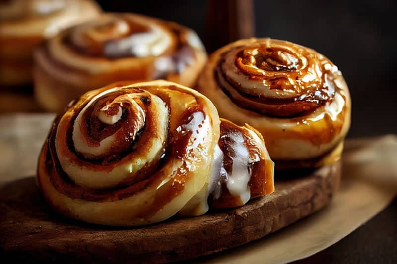

Receta de Rollos de Canela de Angela

Ingredientes
Para la masa:
- ¾ taza de leche tibia
- 2 ¼ cucharaditas de levadura
- ¼ taza de azúcar granulado
- 1 huevo y 1 yema de huevo
- ¼ taza de mantequilla
- 3 tazas de harina de pan
Para el relleno:
- 2/3 taza de azúcar moreno oscuro
- 1 ½ cucharadas de canela molida
- ¼ taza de mantequilla
Instrucciones
- Mezcla la leche con la levadura, el azúcar y los huevos.
- Derrite la mantequilla y agrégala a la mezcla.
- Añade la harina y mezcla hasta obtener una masa uniforme.
- Amasa la masa durante 10 minutos.
- Transfiere la masa a un recipiente grande y cúbrelo con film transparente. Déjalo reposar en algún lugar durante 2 horas.
- Después de que la masa haya duplicado su tamaño, estírala en un rectángulo grande.
- Derrite la mantequilla para el relleno y mézclala con el azúcar y la canela.
- Extiende el relleno sobre la masa y luego enrolla la masa en un rollo suizo.
- Corta el rollo en secciones de 3 cm y colócalas planas en una bandeja para hornear.
- Precalienta el horno a 350°F o 180°C, luego hornea los rollos durante 20-25 minutos hasta que estén ligeramente dorados.
Notas
- Asegúrate de que la levadura esté fresca y activa para que la masa suba adecuadamente.
- Amasa la masa hasta que esté suave y elástica para obtener rollos de canela más tiernos.
- No sobrecargues los rollos con relleno, ya que podría hacer que sean difíciles de enrollar.
Informacion nutrimental
| Informacion Nutricional para 1 unidad(100 g) |
| Calorias |
Grasas |
Carbohidratos |
Proteinas |
| 337 kcal |
13.1 g |
49.8 g |
5.9 g |
Formulario de contacto
Ir a la pagina del administrador
Ir a inicio